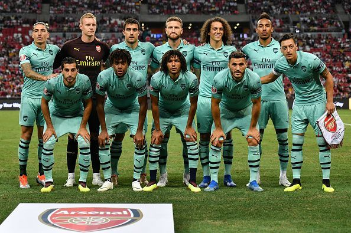

I started playing rugby at the age of 7 with Ballincollig RFC but went to Highfield RFC for a year but I am back with Ballincollig again.
I've played in 3 finals, winning only 1.
I am a proud supporter of the Munster and Irish rugby teams. I go to a lot of the matches in Musgrave Park and Thomand Park for the Munster matches. I have also been to the Aviva Stadium for the Irish games such as 6 Nations games against France, Wales and England, and the highly-awaited derby between Munster and Leinster each year.
When I'm not at the games, I usually watch them on television.

I sometimes play golf with my friends at the weekend at my local golf course.
It a nice, relaxing sport to play.
I never played soccer with a club but have had a kick-around with my friends a lot. I still follow the sport though, I am an Arsenal fan and also a fantasy football enthusiast.
I played Gaelic football in primary and secondary school for about 4 years but I no longer play it.
It was a fun experience where I made a lot of friends and represented my school. We won the Sciath na Scol final in Pairc Ui Rinn when I was in fourth class which was a huge achievement for our school. They were very proud of us all.
I would have liked to have played hurling but it is a very skillful sport which I couldn't get the hang of. I still greatly enjoy watching it on television though and I have been to the odd game in Pairc Ui Chaoimh.
But overall, Rugby is my focus.